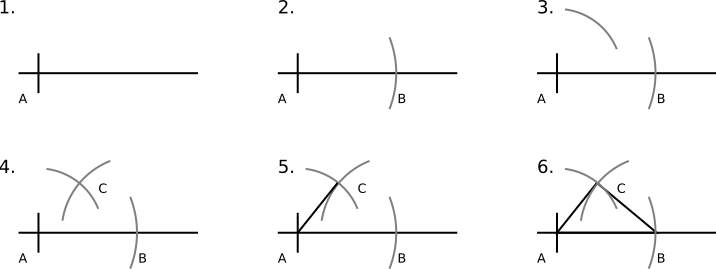
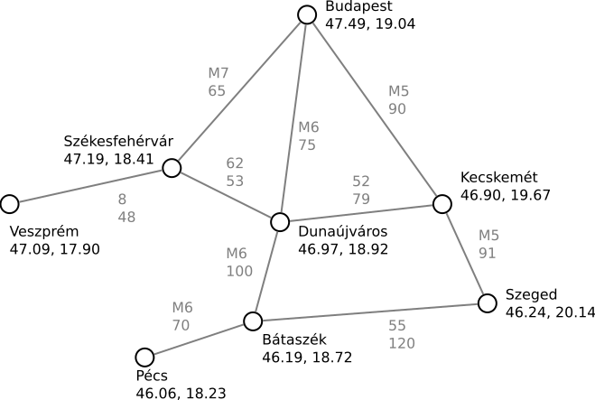

Rajzolnunk kell egy háromszöget, amelynek oldalai 5, 3 és 4 egység hosszúak.
A feladatot kétféleképpen közelíthetjük meg. Az egyik az alábbi. Adott egy háromszög, és ellenőrizni kell, hogy ez pont olyan-e, mint amilyet a feladat kért. A rajz egyébként pont ilyet mutat; az oldalhosszak vonalzóval ellenőrizhetőek is.
A másik megoldás pedig az alábbi. Ez egy szerkesztési utasítás: ha követjük, akkor meg tudjuk rajzolni azt a háromszöget, amit a feladat kért.
- Felveszünk egy félegyenest, amelynek a kezdőpontja A.
- Körívet szerkesztünk r=5 sugárral az A pontból. A félegyenest ez B pontban metszi, így egy szakaszt kaptunk.
- Körívet szerkesztünk r=3 sugárral, szintén az A pontból.
- Körívet szerkesztünk r=4 sugárral a B pontból. A kapott metszéspontot C-nek nevezzük (ha nincs, akkor nem szerkeszthető a háromszög).
- Összekötjük A és C pontokat.
- Összekötjük B és C pontokat – a háromszög kész.
A két megoldás nagyon eltérő szemléletű. Az első puszta tényközlés: „így néz ki a háromszög”. A második viszont egy módszert ad: azt írja le, hogyan szerkesztjük meg a semmiből.
Az alábbi feladatoknál mindig a hogyan lesz a kérdésünk. A feladatoknál ne az eredményt közöljük, hanem módszert, algoritmust adjunk a feladat megoldására! Eközben pedig arra is figyelünk, hogy milyen adatokra van szükségünk, és hogyan használjuk fel azokat. Például megkérdezhetjük valakitől, hogy hány éves, de adhatunk az életkor meghatározására egy módszert is: ki kell vonni a jelenlegi évszámból a születési évszámot. Megkérdezhetjük, hány kilométerre van egymástól Budapest és Szeged. A válasz 175, de most az a lényeg, hogy ezt hogyan határozzuk meg: össze kell adni azoknak az útszakaszoknak a hosszát, amin végigutazunk.
Az itt látható táblázat egy futóverseny eredményeit tartalmazza.
| Rajtszám | Név | Születésnap | Idő |
|---|---|---|---|
| 1 | Break Elek | 1982. 09. 30. | 13:10 |
| 2 | Am Erika | 1984. 05. 06. | 12:35 |
| 3 | Kasza Blanka | 1979. 06. 10. | 13:37 |
| 4 | Dil Emma | 1988. 08. 25. | 12:37 |
| 5 | Koax K. Ábel | 1991. 03. 19. | nem jött el |
| 6 | Lin Yutang | 1987. 03. 30. | 12:51 |
| 7 | Reset Elek | 1992. 04. 05. | 13:37 |
| 8 | Andrea Rossi | 1986. 07. 08. | 13:05 |
Adjuk meg, hogyan kell megválaszolni az alábbi kérdéseket!
- Ki nyerte meg a versenyt?
- ... Mi kellene ahhoz, hogy gyorsan meg lehessen válaszolni ezt a kérdést?
- Milyen gyors volt a legfiatalabb nevező?
- ... Mikor tudnánk gyorsabban megválaszolni ezt a kérdést?
- Hányan vettek részt a versenyen?
- Mi a nemek aránya a nevezők közt?
- Volt-e holtverseny?
- ... Mikor lenne könnyebb megválaszolni ezt a kérdést?
Megoldás
- Meg kell keresni a legrövidebb időt. A válasz az ahhoz a sorhoz tartozó név.
- ... A táblázat jelenleg a rajtszámok (nevezések sorrendje) alapján van rendezve. Ezért az idők össze-vissza vannak. Ha a táblázatot a mért idő alapján rendeznénk sorba, az előző kérdést könnyebb lenne megválaszolni: a táblázat első sorában található név. Lásd a lenti első táblázatot és a kiemelést.
- A fentihez hasonlóan végig kell néznünk a táblázatot, keresve a legnagyobb év–hónap–napot. A válasz a megtalált sorban találhatő idő (de előfordulhat, hogy nem indult).
- ... A dátum szerinti rendezéssel. A legalsó sor lenne a válasz. Lásd a lenti második táblázatot és a kiemelést.
- Meg kell számolni, hány sorban szerepel idő megadva. Ki kell hagyni azokat, akiknél „nem jött el” jelölést látunk.
- Első körben erre azt válaszoljuk, hogy meg kell számolni a nőket és a férfiakat; nők / összes nevező, és férfiak / összes nevező a válasz. Valójában nem ilyen egyszerű a dolog: a külföldi neveket nem ismerjük, vagy esetleg azt sem tudjuk, melyik a vezetéknév és melyik a keresztnév. Andrea a magyartól eltérően olaszul férfinév, és ott a keresztnevet veszik előre.
- Azt kell megvizsgálnunk, találunk-e két egyforma időt. Ha legalább egy ilyen párt találunk, akkor volt.
- ... Jelenleg minden sort mindegyik másikkal össze kell hasonlítani. Ha a versenyen mért idő alapján lenne rendezve a táblázat, a holtversenyben befutó versenyzők egymás alatt lennének. Vagyis elég lenne az egymás alatti számokat összehasonlítani. Lásd a lenti első táblázatot.
| Rajtszám | Név | Születésnap | Idő |
|---|---|---|---|
| 2 | Am Erika | 1984. 05. 06. | 12:35 |
| 4 | Dil Emma | 1988. 08. 25. | 12:37 |
| 6 | Lin Yutang | 1987. 03. 30. | 12:51 |
| 8 | Andrea Rossi | 1986. 07. 08. | 13:05 |
| 1 | Break Elek | 1982. 09. 30. | 13:10 |
| 7 | Reset Elek | 1992. 04. 05. | 13:37 |
| 3 | Kasza Blanka | 1979. 06. 10. | 13:37 |
| 5 | Koaksz K. Ábel | 1991. 03. 19. | nem jött el |
| Rajtszám | Név | Születésnap | Idő |
|---|---|---|---|
| 3 | Kasza Blanka | 1979. 06. 10. | 13:37 |
| 1 | Break Elek | 1982. 09. 30. | 13:10 |
| 2 | Am Erika | 1984. 05. 06. | 12:35 |
| 8 | Andrea Rossi | 1986. 07. 08. | 13:05 |
| 6 | Lin Yutang | 1987. 03. 30. | 12:51 |
| 4 | Dil Emma | 1988. 08. 25. | 12:37 |
| 5 | Koaksz K. Ábel | 1991. 03. 19. | nem jött el |
| 7 | Reset Elek | 1992. 04. 05. | 13:37 |
Egy évfolyam dolgozatot írt. A dolgozatok maximum 10 pontosak lehetnek. Az alábbi pontszámok születtek:
9, 8, 9, 6, 10, 3, 5, 1, 3, 9, 3, 7, 10, 5, 7, 4, 7, 4, 3, 9, 4, 2, 9, 9, 10, 5, 2, 7, 7, 7, 6, 9, 7, 7, 10, 10, 9, 7, 7, 2, 3, 6, 7, 7, 7, 5, 8, 8, 5, 5, 9, 8, 7, 7, 4, 7, 6, 7, 10, 10, 7, 8, 3, 10, 6, 7, 10, 9, 2, 10, 8, 2, 10, 3, 6, 10, 10, 6, 6, 7, 10, 7, 4, 1, 7, 9, 9, 4, 5, 10, 8, 0, 7, 10, 6, 2, 10, 9, 7, 2, 7, 10, 3, 7, 7, 5, 7, 7, 10, 10, 9, 10, 9, 10, 3, 10, 7, 6, 2, 9, 3, 2, 6, 8, 6, 7, 2, 7, 10, 5, 8, 9, 1, 9, 3, 7, 7, 4, 4, 5, 10, 10, 7, 8, 10, 5, 5, 10, 7, 7, 6, 4, 7, 7, 8, 10, 7, 6, 7
Adjunk módszert az alábbi feladatok megoldására!
- Lett hibátlan dolgozat? Lett nulla pontos dolgozat?
- Hány 7 pontos dolgozat született?
- Az előző feladatra adott megoldást felhasználva, hogyan készítünk táblázatot arról, hogy milyen pontszámból, hány darab lett?
- Képzeljük el azt, hogy csak egyszer szaladhatunk végig a pontszámok listáján. Sőt: meg sem kapjuk papíron, hanem valaki lediktálja nekünk, egyetlen egyszer. Hogyan tudunk ilyenkor táblázatot készíteni arról, hogy milyen pontszámból, hány darab lett?
- Ha megvan a pontszámok eloszlása, akkor hogyan válaszoljuk meg az első kérdést: lett-e hibátlan dolgozat?
- Melyik volt a leggyakoribb pontszám?
Megoldás
- (Tegyük fel, hogy a hibátlan 10 pontosat jelent.) Elindulunk a lista elejéről. Amint találunk egy 10 pontost, azt mondhatjuk, hogy igen, lett ilyen. Ha végignéztük a számsort, és sehol nem találtunk, akkor viszont nincs. Vegyük észre, hogy a szemünk nagyon könnyen megtalálja a 10 pontosokat, de a 0-sakat nem. 0-sból amúgy egyetlen egy darab van. Ha szisztematikus módszert akarunk adni, az viszont a 0 és a 10 pontosok keresésére is ugyanaz: egyesével végigmegyünk a számsoron.
- Végig kell nézni a teljes számsort, és az ujjunkon / strigulákkal / bárhogy máshogy számlálni a 7-eseket.
- Felírjuk a pontokat 0-tól 10-ig. Mindegyik számra alkalmazzuk az előző módszert: megszámláljuk a 0-kat, az 1-eket, és így tovább.
0 pont: 1 db 1 pont: 3 db 2 pont: 10 db 3 pont: 11 db 4 pont: 9 db 5 pont: 12 db 6 pont: 14 db 7 pont: 41 db 8 pont: 11 db 9 pont: 18 db 10 pont: 29 db
- Felírjuk a pontokat 0-tól 10-ig. Hallgatjuk a diktált számsort; amilyen számot hallunk, amellé húzzuk a strigulát. Ahány pontról
van szó, a táblázatnak annyiadik soráról beszélünk. Mire végzünk, előállt a táblázat, amit szerettünk volna.
0 pont: 1 db, | 1 pont: 3 db, ||| 2 pont: 10 db, ||||| ||||| 3 pont: 11 db, ||||| ||||| | 4 pont: 9 db, ||||| |||| 5 pont: 12 db, ||||| ||||| || 6 pont: 14 db, ||||| ||||| |||| 7 pont: 41 db, ||||| ||||| ||||| ||||| ||||| ||||| ||||| ||||| | 8 pont: 11 db, ||||| ||||| | 9 pont: 18 db, ||||| ||||| ||||| ||| 10 pont: 29 db, ||||| ||||| ||||| ||||| ||||| ||||
- Csak meg kell nézni a táblázat legalsó sorát. Az eredeti pontszámokra már nincs is szükségünk.
- Az előző táblázatban keressük azt a sort, ahol a legnagyobb szám van. Ne feledjük: grafikusan ez könnyű, de ha számokról van szó, akkor meg kell keresnünk a legnagyobbat. Lásd a futóversenyes feladatot.
Ez a feladat a 2017-es informatika érettségi adaptációja.
Egy fogadó az alábbi adatokról vezet nyilvántartást:
- Szobák a fogadóban (sorszám, név, ágyak száma, pótágyak száma)
- Vendégek (azonosító, név, irányítószám)
- Foglalások (foglalás sorszáma, vendég sorszáma, szoba sorszáma, érkezés, távozás, személyek száma).
| Sorszám | Név | Ágy | Pótágy |
|---|---|---|---|
| 1 | Szende | 4 | 3 |
| 2 | Szundi | 4 | 2 |
| ... | |||
| Azonosító | Név | Irsz |
|---|---|---|
| 1 | Gulyás Klaudia | 2074 |
| 2 | Barta Andrea | 8943 |
| ... | ||
| Foglalás | Vendég | Szoba | Érkezés | Távozás | Személyek |
|---|---|---|---|---|---|
| 1 | 1 | 3 | 2016-01-04 | 2016-01-07 | 4 |
| 2 | 2 | 4 | 2016-01-04 | 2016-01-06 | 3 |
| ... | |||||
Válaszoljuk meg a kérdéseket, illetve adjunk módszert az alábbi kérdések megválaszolására!
- Minden táblázat sorait beszámoztuk. Szükséges ez, vagy van, ahol elhagyható lenne a sorszám?
- Hány fő szállásolható el a fogadóban?
- Hány vendég érkezett Borsod-Abaúj-Zemplén megyéből? (Az irányítószámok: 3400–3999.)
- Hány foglalás található a Szende nevű szobához?
- Szabad-e a Szende nevű szoba 2020.12.30-tól 2021.01.02-ig?
- Melyik a legnépszerűbb szoba, vagyis ahova a legtöbbször foglaltak a vendégek?
- Kik a visszatérő vendégek?
- Van-e szabad szoba 3 fő részére, 2020.12.30-tól 2021.01.02-ig?
- A fogadó adatvédelmi nyilatkozata szerint a vendégek adatait 1 évig őrzik meg. Soroljuk fel azokat a foglalásokat és vendégeket, amiket / akiket törölni kell az adatbázisból!
- Van-e olyan foglalás az adatbázisban, ahol véletlenül túl kicsi szobát adtak?
- Vannak-e ütköző foglalások az adatbázisban, amikor ugyanarra az időszakra két vendégnek kiadták ugyanazt a szobát?
- Javítható-e a hiba, azaz van-e üres szoba nekik?
Megoldás
- A szobákat nem feltétlenül kellene sorszámozni, ha figyelünk rá, hogy mindegyik szoba neve eltérő legyen. A vendégeknél viszont ez feltétlenül szükséges, mert lehetnek ugyanolyan nevű vendégek.
- Ehhez össze kell adnunk az összes szoba ágyainak és pótágyainak számát.
- A vendégek táblázatát kell csak nézni, szűrni irányítószámok szerint.
- Meg kell keresni a szoba sorszámát. Utána a foglalások közül azokat kell megszámolni, amikhez ez a sorszám tartozik.
- Megkeressük a szoba sorszámát. Ezután pedig végignézzük a foglalások közül azokat, ahol ezt a sorszámot látjuk. Ha a megadott időintervallum nem fed át semelyik foglalással, akkor igen. (A régi vendég távozása, és az új vendég érkezése eshet egy napra. Ha az előbbi reggel elutazik, akkor az utóbbi délután már megkaphatja a szobát.)
- Érdemes egy segédtáblázatot készíteni: szoba sorszáma, foglalások száma. A foglalások táblázatát vizsgálva ezt ki tudjuk tölteni (lásd a fenti, dolgozatos feladatot). Ha megvan, megkeressük a maximumot: a szoba sorszáma alapján pedig a neve meghatározható a szobák táblázatából.
- Ehhez is segédtáblázatot készítünk: vendég sorszáma, foglalások száma. Ha elkészült, akkor azokat válogatjuk ki, akiknél a foglalások száma ≥ 2. Így kapunk néhány vendégazonosítót, amikhez kikeressük a neveket.
- Segédtáblázatot készítünk a szobákból. Kihúzzuk azokat, amik 3 fősnél kisebbek. Végignézzük a foglalásokat, csak azokat figyelembe véve, amik átfednek a megadott időintervallummal. Amik igen, az ahhoz tartozó szobákat is kihúzzuk. A megmaradt szobákat adhatjuk ki; ha legalább egyet találtunk, a válaszunk: van szabad szoba. Sokat segítene a megoldásban, ha naptárszerűen látnánk a foglalásokat. Tehát megoldási módszer lehet az is, hogy az összes foglalást felvezetjük egy naptárba, amiben utána már könnyű az adott időszakot vizsgálni.
- Töröljük az egy évnél régebbi foglalásokat. Utána pedig töröljük azokat a vendégeket, akikhez nincs foglalás rögzítve (vagy épp most lett törölve). Vigyázat: egy foglalás törlése nem jelenti azt, hogy a vendéget is törölni kell; lehetett egy évnél frissebb foglalása is.
- Végignézzük a foglalásokat. Mindegyiknél a szoba sorszáma alapján megkeressük a szobát is. Ha ágyak + pótágyak < személyek száma, akkor hibát találtunk.
- Minden foglalást megvizsgálunk, hogy van-e olyan másik foglalás, amelyik ugyanarra a szobára, átfedő időszakra vonatkozik.
- Ha találunk ütközést, akkor valamelyik foglaláshoz másik szobát kell keresni (lásd a fenti feladatot). Vigyázat: ha A foglalás ütközik B-vel, akkor előfordulhat, hogy csak A-t, vagy csak B-t tudjuk máshova költöztetni (mert eltérő időszak, eltérő vendégszám lehet.) És vigyázat: lehet, hogy kettőnél több foglalás ütközik!
Az alábbi elnagyolt térkép néhány várost és azok GPS koordinátáit mutatja. Jelöli a köztük vezető utakat is, azok neveivel és hosszaival együtt:
A térkép adatait a gépi feldolgozáshoz táblázatban rögzítjük. Kézenfekvő megoldás a városoknak és az utaknak két külön táblázatot csinálni, hiszen
- A számuk különböző (egymástól függetlenül változhat).
- A városokhoz (név, gps) és az utakhoz (név, hossz) eltérő adatokat rögzítünk.
Építsük fel a táblázatokat, feltüntetve az összes várost és utat!
| Sorszám | Név | GPS |
|---|---|---|
| 1 | Budapest | 47.49, 19.04 |
| 2 | Székesfehérvár | 47.19, 18.41 |
| ... | ||
| Honnan | Hova | Név | Hossz |
|---|---|---|---|
| 1 | 2 | M7 | 65 |
| ... | |||
Az adatmodell
Válaszoljuk meg az alábbi kérdéseket!
- Miért kellett beszámozni a városokat? Azonosíthatna egy várost a neve is?
- Az utakhoz nem rendeltünk hasraütésszerű sorszámokat. Be kellene számozni ezeket is?
- A táblázatban szereplő első út Budapestről Székesfehérvárra megy a sorszámok szerint. Nem Székesfehérvárról megy Budapestre? Miért? Lenne értelme ennek a megkülönböztetésnek?
Megoldás
- A várost nem tudja a neve azonosítani. Különböző országokban (esetleg egyes országokban különböző tartományokban) lehet ugyanolyan nevű város.
- Nem szükséges. Lehetnek ugyan párhuzamosan futó utak (pl. Budapest–Székesfehérvár között nem csak az M7-esen, hanem a 7-esen is mehetünk). Ugyan egy útnak lehetnek különböző szakaszai (pl. a térképen az M5 és az M6), de ha két város közt két út is van, azok eltérő nevet kapnak.
- Ebben a példában nincs értelme a megkülönböztetésnek. Ha tárolnánk egyirányú utcákat, akkor lehetne.
Keresések
Hogyan lehet a táblázatok alapján válaszolni az alábbi kérdésekre?
- Mi Veszprém sorszáma? Mi Debrecen sorszáma?
- ... Mit tehetünk annak érdekében, hogy erre a kérdésre gyorsabban lehessen válaszolni?
- Megy közvetlen út Kecskemétről Pécsre?
- ... Mit tehetünk annak érdekében, hogy erre a kérdésre könnyebben (kevesebb keresgéléssel) lehessen válaszolni?
- Milyen hosszú a közvetlen út Bátaszék és Szeged között?
- Mennyi idő alatt lehet a Kecskemétről Dunaújvárosra tartó úton végigautózni?
- Milyen hosszú az M6-os út?
- ... Mit tehetünk annak érdekében, hogy erre a kérdésre könnyebb legyen válaszolni?
- ... Biztosan tudunk válaszolni erre a kérdésre?
- Mely városokat érinti az M5-ös?
- Soroljuk fel útirány szerint, mely városokat érinti az M5-ös!
- Vegyük sorra az eddigi megoldásainkat! Képzeljük el, hogy a városok táblázata 1) sorszám szerint, 2) ábécé rendbe van rendezve! Képzeljük el, hogy az utak táblázata 1) név szerint, 2) város sorszámok szerint, 3) hossz szerint van rendezve. Melyik eset, melyik feladat megoldását gyorsítja vagy lassítja?
- Igaz-e, hogy minden út Rómába vezet?
Megoldás
- Ezekhez végig kell néznünk a városok táblázatát. Ha megvan a város, a sorszám kiolvaható.
- ... Ha ábécébe rendezzük a városokat, akkor könnyebb megtalálni valamelyiket.
- Kikeressük Kecskemét sorszámát és Pécs sorszámát, mint az előző feladatban. Ha megvan mindkettő (pl. 3 és 5 a sorszámok), akkor megnézzük, hogy szerepel-e ilyen út a második táblázatban. Vigyázat: lehet, hogy 3→5, de az is lehet, hogy 5→3 formában találjuk meg.
- ... Ha a városok ábécében vannak, akkor könnyebb a sorszámokat megtalálni. Az utaknál figyelhetünk arra, hogy a „honnan” sorszám mindig a kisebb, a „hova” mindig a nagyobb legyen; tehát pl. 3→5-öt nem visszük fel a táblázatba 5→3 formában. Ezen felül, rendezhetjük az utakat is, a „honnan” város sorszáma, azon belül pedig a „hova” város sorszáma alapján, ezzel is segítve a keresést.
- Hasonlóan, mint az előző feladat, de egy másik oszlopban van a válasz.
- Nem tudjuk megmondani. Nem ismerjük a táblázatból a sebességkorlátozásokat.
- Ehhez végig kell néznünk az utak táblázatát, hogy hol szerepel „M6” a névnél. A kapott sorokban található hosszakat kell összegezni.
- ... Ha az utak táblázata rendezve van az út neve szerint, könnyebben megtaláljuk a keresett utat. A felette és az alatta lévő sorokat kell vizsgálni.
- ... Valójban nem. Az M7-es például továbbmegy a Balaton felé, de a térkép csak az első szakaszát jelöli, és ezáltal a táblázat is.
- Ehhez előbb meg kell keresnünk az M5-ös szakaszait az utak táblázatából, „honnan–hova” párokat kapva. A kapott számok közül kiválogatjuk a különbözőeket. (Lesznek egyformák, pl. Kecskemét→Budapest és Kecskemét→Szeged miatt.) A kapott sorszámokhoz tartozó városokat pedig kikeressük a városok táblázatából.
- A fentihez hasonlóan megkeressük az M5 szakaszait. De utána sorba is kell rakni azokat. Ezért keresünk ezek közül egy olyan sorszámot, amelyik csak egyszer szerepel – mert ez az út eleje vagy vége. (Elméletben pontosan kettő ilyen kell legyen, különben nem ismerjük az út összes szakaszát, vagy körbe-körbe megy az út.) Ettől kiindulva fel tudjuk sorolni az útvonalba eső városokat, mintha dominókként tennénk egymás után a számpárokat, pl. 5–8, 8–7, 7–11. Ezekből a kiinduló sorszámokra van szükségünk, és az utolsó párból az érkezőre is, pl. 5, 8, 7, 11. A sorszámok alapján pedig megkeressük a városokat, hogy a nevük is meglegyen.
- Mindig azt figyeljük, hogy amikor keresnünk kell valamit, akkor a táblázat aszerint van-e rendezve! Például ha fel kell sorolnunk azokat az utakat, amelyek egy bizonyos városból kiindulnak, akkor 1) jó, ha a városok táblázata ábécében van, mert akkor a várost hamar meg fogjuk találni, 2) jó, ha az utak táblázata sorszámok szerint, mert akkor az utakat hamar megtaláljuk, 3) ugyanakkor ez az utak megkeresésében nem segít, mert az a táblázat nem lehet egyszerre a „honnan” és a „hova” oszlop szerint is rendezve.
- A kérdés elég zavaros... De vegyük úgy, hogy azt kérdezi, van-e olyan város, ahonnan nem lehet eljutni Rómába. Valójában ezt könnyebb fordított irányba haladva megválaszolni. Keressük meg Róma sorszámát. Ezután keressük meg azokat az utakat, amik érintik ezt a várost („honnan” vagy „hova” sorszámuk megegyezik Rómáéval). Jegyezzük fel az így kapott városokat, jelöljük meg őket, hogy oda el lehet jutni. Keressük meg az ezekhez tartozó utakat is. Folytassuk addig, amíg találunk új várost – ha valamelyikben jártunk, azt hagyjuk figyelmen kívül. Amint végeztünk, már csak meg kell vizsgálni, van-e olyan város, amit nem jelöltünk be. Feltételezve, hogy az utak kétirányúak, ha Rómából nem lehet oda eljutni, akkor onnan sem lehet Rómába.
Módosítások
Hogyan kell módosítani a táblázatokat ezekkel az adatokkal? Mire kell figyelni?
- Új várost rögzítünk a táblázatban: Tatabánya. Mi a teendő?
- Szeretnénk felvinni az M1-es első szakaszát: Budapest–Tatabánya. Mi a teendő?
Megoldás
- Meg kell keresni, hogy szerepel-e már a város, mert nem lehet bent többször a táblázatban. Ha nincs, egyedi sorszámot hozzárendelve kell felvinni. Az egyedi sorszám lehet például a legnagyobb ismert sorszám + 1.
- Meg kell keresni a városok sorszámait. Amelyik város nem szerepel a táblázatban, fel kell vinni. Ha megvan mind a két sorszám, akkor már az utat is beírhatjuk a másik táblázatba – ha még nem szerepel.